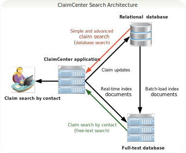
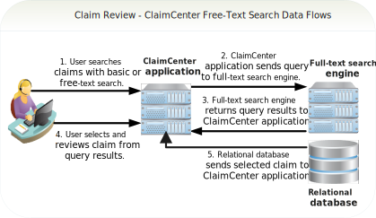
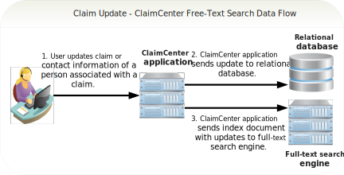
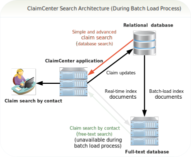
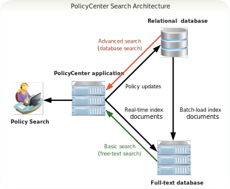
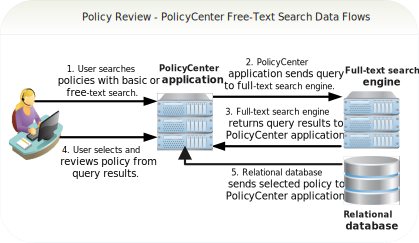
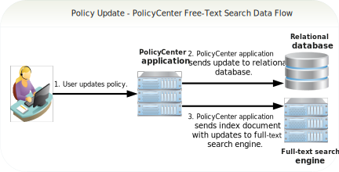
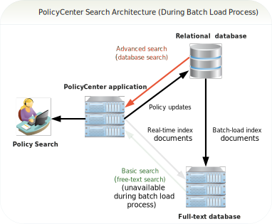

Overview of search
ClaimCenter provides two types of search:
- Database search
- Searches the relational database for claims, contacts, activities, checks, recoveries,
and bulk invoices by using the Structured Query Language (SQL). You access these
searches from the Search tab.
ClaimCenter also includes database search from screens besides those accessed through the Search tab. For example, you can do a database search for policies from the New Claim screen.
- Free-text search
- Searches an external full-text database for claims by claim contact using the APIs of an external full-text search engine. You access free-text search from the screen.
Database search is fully enabled by default. Users can search for claims, activities, checks, recoveries, and bulk invoices with database search. Users can choose to include archived claims with each database search request. The two user interfaces for database search are known as simple search and advanced search.
Free-text search is available as an option that you must enable and configure. Free-text search is available only for searching for claims by claim contact. Free-text search results never include archived claims. The user interface for free-text search is known as search by contact.

Free-text search involves two sets of data flows in which a user selects and reviews claims as well as updates them. In the claim review data flows, the user searches, selects, and reviews claims with the ClaimCenter user interface. Searching claims entails sending queries to and receiving claim results from a full-text search engine. Selecting and reviewing claims entails requesting and receiving claims from a relational database. The following diagram illustrates the first set of free-text search data flows for reviewing claims:

In the claim update data flow, the user updates claims or claim-associated contact information with the ClaimCenter user interface. Updating claims and claim-associated contact information entails sending updates to a relational database as well as sending an index document with the updates to a full-text search engine. The following diagram illustrates the second set of free-text search data flows for updating claims:

- Simple Search, Advanced Search – Displays fields on which to search for claims using database search.
- Search by Contact – Displays fields on which to search for claims using claim contacts and free-text search.
If you disable free-text search, the menu displays only the Simple and Advanced options.
- Users want to search for claims by claim contact with commonly used criteria and receive results quickly, which the Search by Contact screen provides.
- Users want to search claims with highly targeted criteria, which requires the Simple Search screen.
- Users want to search claims with partial names, phonetic names, or sounds-like names, which the Search by Contact screen provides.
- Users want to search archived claims, which requires the Advanced Search screen.
An administrator hides the Search by Contact search screen while the free-text batch load command runs, but users still can search claims with the Simple and Advanced options. The following diagram illustrates the ClaimCenter database and free-text search architecture during the batch load process:

PolicyCenter provides two types of search:
- Database search
- Searches the relational database for policies, accounts, producers, activities, and
contacts by using Structured Query Language (SQL). You access these searches from the
Search tab.
PolicyCenter also includes database search from screens besides those accessed through the Search tab. For example, you can do a database search for policy form patterns, policy locations, regions, and other entities and objects.
- Free-text search
- Searches an external, full-text database for policies, by using the APIs of an external full-text search engine. PolicyCenter includes free-text search for policies and submissions. You access free-text search from the screen.
Database search is fully enabled by default. Users can search policies, accounts, producers, activities, and contacts with database search. Users can choose to include archived policies with each database search request. The user interface for database search is known as advanced search.
Free-text search is available as an option that you must enable and configure. Free-text search is available only for searching for policies and submissions. Free-text search results never include archived policies. The user interface for free-text search is known as basic search.



- Basic
- Displays fields on which to search policies and submissions. The Basic screen uses free-text search to return policies and submissions that match criteria users enter.
- Advanced
- Displays fields on which to search policies and jobs. The Advanced screen uses database search to return policies and jobs that match criteria users enter.
If you enable free-text search, the Search Policies screen displays the Basic and Advanced search screens. Otherwise, the Search Policies screen displays the Advanced screen only.
Reasons that users choose the Basic or Advanced screens include:
- Users want to search policies with commonly used criteria and receive results quickly, which the Basic screen provides.
- Users want to search policies with highly targeted criteria, which requires the Advanced screen.
- Users want to search policies with partial names, phonetic names, or sounds-like names, which the Basic screen provides.
- Users want to search archived policies, which requires the Advanced screen.
- Users want to search for specific job types, such as all policy changes bound within a certain period.
An administrator hides the Basic search screen while the free-text batch load command runs, but users still can search policies with the Advanced screen. The following diagram illustrates the PolicyCenter database and free-text search architecture during the batch load process:

See also